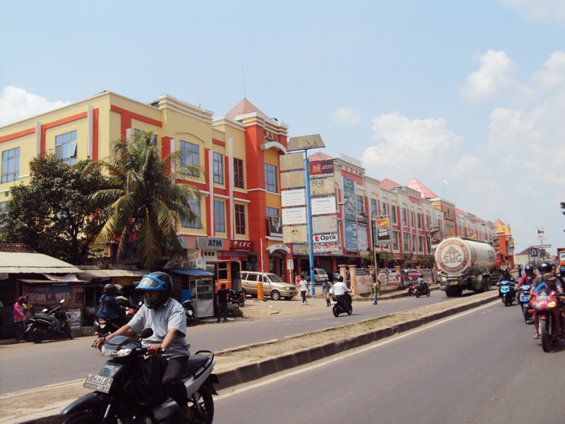
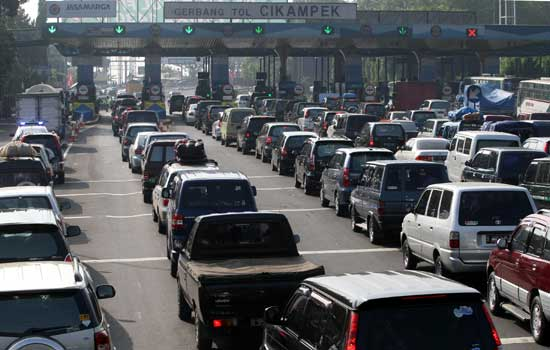
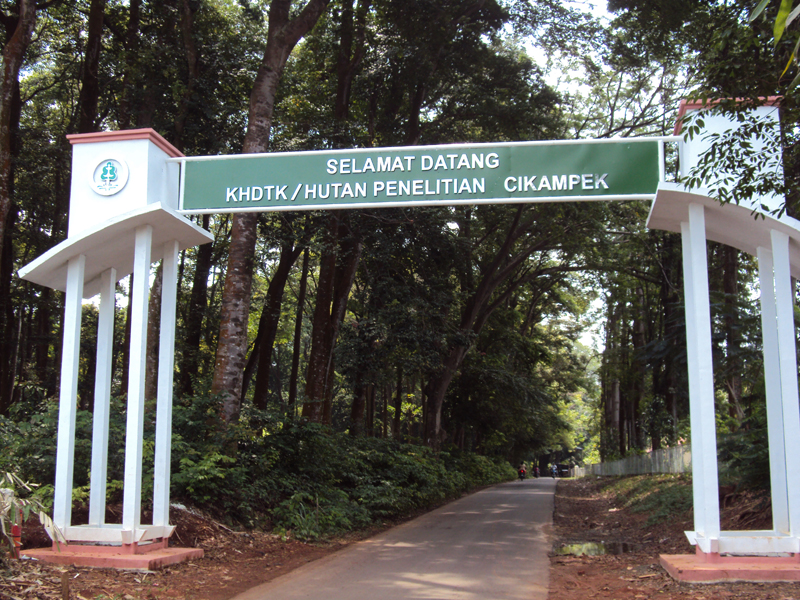

Pusat Perbelanjaan

Prasarana Perdagangan yang ada di antaranya adalah:
Plaza Cikampek adalah Pusat perbelanjaan Tertua di Cikampek,
Terletak di Perempatan samping Jembatan Layang Ahmad Yani,Plaza Cikampek di Bangun pada tahun 70an Dan Sudah di Renovasi pada Tahun 2013.
Mall Cikampek adalah Pusat Perbelanjaan terbesar dan Terluas Di Cikampek,
Mall ini berada di Desa Dawuan Timur, depan lampu Lalu-lintas dekat Kecamatan Cikampek.
Sudirman Center
Toserba Yogya Cikampek
Ruko Central Cikampek (pinggir mall sebelah barat)
Tokma Toserba (Sukaseuri & Sukasenang, Cikampek Utara)
dan Berbagai Swalayan lainnya .
Transportasi

Cikampek merupakan daerah yang dilalui jalur Pantura dari Jakarta menuju Jawa Tengah dan Jawa Timur,
Di Cikampek terdapat Stasiun Cikampek Kota, Yang menghubungkan kereta api antara Jakarta-Bandung dan Jakarta-Cirebon.
Cikampek memiliki 4 buah pasar yang berada dalam satu lingkungan dan sebuah terminal yang sebelum dibangun Jalan Tol Cikampek-Jakarta adalah terminal tersibuk di Jawa Barat,
karena merupakan persimpangan Jakarta-Bandung dan Jakarta-Cirebon. Tetapi sejak jalan tol dibangun secara berangsur-angsur fungsi terminal Cikampek berkurang.
Terdapat beberapa jalur Tol di Cikampek untuk menghubungkan Transportasi ke berbagai kota di Jawa
Ekonomi
Sejak dibukanya Jalan Tol Cipularang, kota Bandung telah menjadi tujuan utama dalam
menikmati liburan akhir pekan terutama dari masyarakat yang berasal dari Jakarta
sekitarnya. Selain menjadi kota wisata belanja, kota Bandung juga dikenal dengan
sejumlah besar bangunan lama berarsitektur peninggalan Belanda. Adapun tempat hiburan sbb :
Hutan Penelitian

Sangat pas untuk rekreasi alam dan kuliner karena hawanya yang dingin dan nyaman.